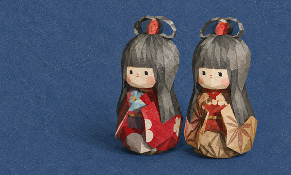

-story-
遠野物語に出てくる多くの逸話の内、数篇をご紹介。
予め知っておくことで、実際の名所めぐりをより楽しめることでしょう。
予め知っておくことで、実際の名所めぐりをより楽しめることでしょう。

旧家にはザシキワラシという神の住みたもう家少なからず。
この神は多くは十二、三ばかりの童子なり。
座敷童 （ざしきわらし）
ある年のこと。土淵村の留場という橋のほとりで、村の男が、見慣れない二人の感じの良い娘らに会った。
なにか物思いに沈んでいるようなので「お前たちはどこから来た」と男がたずねれば、「おら山口の孫左衛門の家から来た」と答える。
それでは「これからどこへ行くのか」と聞くと、何の村の誰それの家に行くと答えた。男は、ははあ、これは座敷童に違いない、さては孫左衛門の世も末だなと思っていたところ、まもなくして一家は、毒キノコの非運に見舞われ、昼時に外出していた童子がひとり生き残ったのみとなった。その子供も早くに亡くなり家は絶えたという。
二人の娘たちが行く先と告げたある豪農の家は、いまも栄えている家系である。